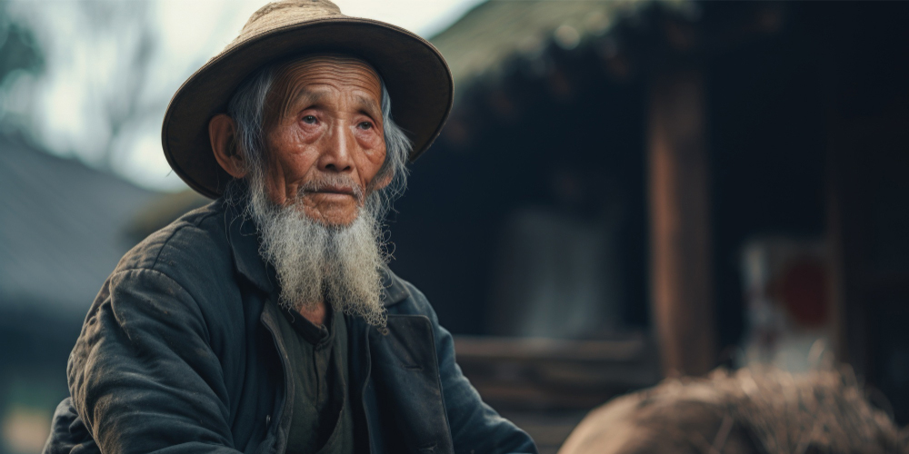

ปู่จีนปั่นสามล้อเก็บเงินล้านบริจาคเด็กกำพร้า
"นรชาติวางวาย มลายสิ้นทั้งอินทรีย์ สถิตย์ทั่วแต่ชั่วดี ประดับไว้ในโลกา"
บทกวีบทนี้ดูเหมือนจะใช้ได้กับ "คนดี" ทุกคนเสมอ โดยเฉพาะหากความดีของบุคคลผู้นั้น ได้สร้างประโยชน์ที่ยิ่งใหญ่ให้กับมหาชนด้วยแล้ว ชื่อของเขาก็มักจะถูกจารึกไว้และได้รับการกล่าวถึงไปอีกนานแสนนาน แม้ว่าเจ้าตัวจะล่วงลับไปนานแล้วก็ตาม เช่นเดียวกับคนดีที่ทำประโยชน์ยิ่งใหญ่เพื่อสังคม ที่กระปุกดอทคอมนำเรื่องราวมาเล่าสู่กันฟังในวันนี้ ปฏิเสธไม่ได้เลยว่า ถ้าหากใครได้อ่านได้รับรู้เรื่องราวของเขาก็คงจะชื่นชมนับถือ และจดจำความดีของเขาขึ้นใจไม่ต่างกัน
และเรื่องราวดี ๆ ที่นำมาฝากกันในวันนี้ เป็นเรื่องราวของคุณปู่ชาวจีนนามว่า ไป่ ฟาง ลี่ จากเมืองเทียนจิน ผู้ลำบากตรากตรำถีบสามล้อเก็บเงินกว่า 1.7 ล้านบาท แล้วบริจาคให้กับเด็กยากจนที่ด้อยโอกาสทางการศึกษา ให้ได้มีโอกาสเล่าเรียนเป็นอนาคตของชาติ แต่กลับกันตัวคุณปู่เองกลับใช้ชีวิตอย่างสมถะ และมีชีวิตอย่างพอเพียงในกระท่อมเล็ก ๆ ของตัวเอง
คุณปู่ ไป่ ฟาง ลี่ อาศัยอยู่อย่างโดดเดี่ยวในกระท่อมเล็ก ๆ ในเมืองเทียนจิน และใช้ชีวิตด้วยรอยยิ้มมาทั้งชีวิต แม้ว่าชีวิตวัยเด็กของคุณปู่จะไม่ได้รับการศึกษาเหมือนกับใครหลาย ๆ คน แต่นั่นก็ไม่ได้ทำให้คุณปู่คิดว่าตัวเองด้อยกว่าคนอื่นแต่อย่างใด คุณปู่เลือกที่จะมีชีวิตอยู่แบบพอเพียงแต่ก็มีความสุขไปกับสิ่งรอบข้าง และดูเหมือนว่าชีวิตของคุณปู่จะมีความสุขมากกว่าคนที่มีพร้อมทุกอย่างหลาย ๆ คนบนโลกเสียด้วย
ในแต่ละวัน คุณปู่จะปั่นสามล้อคู่ใจออกไปคอยรับส่งผู้โดยสารตั้งแต่ 6 โมงเช้า และกลับบ้านไม่ต่ำกว่า 2 ทุ่มทุกวัน ซึ่งตั้งแต่เช้ายันค่ำ ชีวิตของคุณปู่จะวนเวียนอยู่กับการรับผู้โดยสารจากที่หนึ่ง แล้วพาไปส่งที่ปลายทางโดยปลอดภัย ก่อนจะรอรับผู้โดยสารรายใหม่อีกครั้ง และตลอดทั้งวันที่คุณปู่ตระเวนรับส่งผู้โดยสารนั้น แม้จะเหนื่อยแค่ไหน แต่รอยยิ้มของคุณปู่ก็ไม่เคยเลือนหายไปจากใบหน้า ราวกับว่าสิ่งที่ทำอยู่ตรงหน้าคือความสุขที่สุดในชีวิตของคุณปู่เลยทีเดียว ยิ่งไปกว่านั้น คุณปู่ไม่เคยเกี่ยงเรื่องค่าโดยสาร ไม่เคยตั้งราคาค่าโดยสารเลยสักครั้ง แต่จะให้ผู้โดยสารจ่ายค่าโดยสารตามที่เห็นสมควร และคุณปู่ก็ยิ้มรับมันไม่ว่ามันจะคุ้มค่าเหนื่อยหรือไม่ก็ตาม ส่วนเงินค่าโดยสารที่เก็บได้ในแต่ละวันนั้น คุณปู่ก็เก็บสะสมมาเรื่อย ๆ และไม่เคยอยากได้อยากมีอะไรเพิ่มเติม คุณปู่ยังคงอาศัยอยู่ในกระท่อมเล็ก ๆ และประทังชีวิตด้วยอาหารเล็ก ๆ น้อย ๆ ที่พอจะทำให้อิ่มได้ทุกมื้อเท่านั้น
จนเมื่อปี พ.ศ. 2529 ขณะที่คุณปู่มีอายุได้ 74 ปี คุณปู่ได้ก็พบเจอกับเรื่องราวสะเทือนใจ ที่ได้เปลี่ยนวิถีชีวิตของคุณปู่ให้เปลี่ยนไปอย่างสิ้นเชิงหลังจากนั้น นั่นคือ วันหนึ่งขณะที่คุณปู่กำลังจอดสามล้อพักหลังจากส่งผู้โดยสารเสร็จแล้ว คุณปู่ได้มองเห็นเด็กชายวัย 6 ขวบคนหนึ่ง กำลังช่วยหญิงสาวคนหนึ่งถือของพะรุงพะรังที่ซื้อมาจากตลาด ซึ่งมันดูหนักมากสำหรับเด็กชายตัวเล็ก ๆ คนนั้น แต่เขาก็ช่วยหญิงสาวถือของไปจนถึงปลายทางได้ และหญิงสาวก็ได้ให้ค่าตอบแทนจำนวนหนึ่งแก่เด็กชายคนนั้นไป ซึ่งหลังจากที่เด็กชายได้รับเงินค่าตอบแทน เขาก็มองขึ้นไปบนฟ้าด้วยใบหน้าที่เปี่ยมไปด้วยรอยยิ้ม ราวจะขอบคุณพระเจ้าสำหรับเงินที่ได้รับมาในมือ ก่อนที่จะเก็บมันลงในกระเป๋าแล้วไปรับจ้างถือของให้คนอื่น ๆ และทุกครั้งที่ได้รับเงิน เขาก็จะมองไปบนฟ้าด้วยรอยยิ้มอย่างนี้ซ้ำแล้วซ้ำเล่า
หลังจากนั้นไม่นาน คุณปู่กลับเห็นเด็กชายคนดังกล่าวไปคุ้ยขยะ เพื่อที่จะค้นหาอะไรบางอย่าง และในที่สุด เด็กชายก็หยิบขนมปังสกปรกชิ้นหนึ่งขึ้นมา แสดงท่าทีดีใจก่อนที่จะปัดสิ่งสกปรกออกไปจากขนมปังชิ้นนั้นแล้วกินเข้าไปอย่างมีความสุข ราวกับขนมปังชิ้นนั้นเป็นของขวัญจากสวรรค์ คุณปู่รู้สึกสะเทือนใจกับภาพที่เห็นเป็นอย่างมาก จึงเข้าไปชวนเด็กชายคนดังกล่าวมานั่งทานมื้อเที่ยงด้วยกัน แล้วถามเด็กชายคนดังกล่าวว่า ทำไมจึงไม่เอาเงินที่ได้จากการรับจ้างถือของไปซื้อข้าวกินให้อิ่ม ซึ่งคำตอบที่ได้นั้น ก็ทำให้คุณปู่ถึงกับอึ้ง เมื่อเด็กชายได้บอกกับคุณปู่ว่า "ผมจะเอาเงินไปซื้ออาหารให้กับน้อง ๆ ของผม" ก่อนอธิบายต่อไปว่า พ่อแม่ของเขามีอาชีพคุ้ยขยะไปขายประทังชีวิต แต่แล้ววันหนึ่งพ่อแม่ของเขาก็หายตัวไป และเขาก็ไม่ได้พบกับพ่อแม่อีกเลย ชีวิตของเขาจึงเหลือเพียงน้องสาว 2 คนเท่านั้น
หลังจากได้รับรู้เรื่องราวสุดสะเทือนใจของเด็กชายแล้ว คุณปู่ก็ได้ขอให้เด็กชายพาไปหาน้องสาวทั้งสองคน ซึ่งทันทีที่คุณปู่ไปถึง ก็รู้สึกเหมือนหัวใจตัวเองกำลังร้องไห้ออกมา เมื่อภาพที่เห็นตรงหน้าคือเด็กหญิงวัย 4 และ 5 ขวบ ที่มีเนื้อตัวสกปรกและผ่ายผอม ขณะที่เพื่อนบ้านก็ไม่มีใครสนใจเด็กทั้ง 3 คนเลย
จากนั้นคุณปู่จึงได้พาเด็กทั้งสามไปอยู่ที่สถานเลี้ยงเด็กกำพร้าเมืองเทียนจิน เขาบริจาคเงินทั้งหมดที่เก็บสะสมมาตลอดชีวิตให้กับเด็กกำพร้าที่นี่ เพื่อเป็นค่าอาหารและทุนการศึกษา และตั้งแต่นั้นมา คุณปู่ก็เริ่มทำงานหนักขึ้น เพื่อหาเงินมาบริจาคให้กับสถานเลี้ยงเด็กกำพร้า ซึ่งถึงแม้จะต้องเหนื่อยมากขึ้น แต่มันก็คุ้มค่าเมื่อเงินที่ได้มาก็มีจำนวนมากขึ้นเช่นกัน โดยเงินทั้งหมดที่คุณปู่หามาได้หลังจากนั้น คุณปู่จะเจียดไว้นิดหน่อยสำหรับเป็นค่าอาหารในแต่ละวัน นั่นคือ ขนมปัง 2 ชิ้นสำหรับมือเที่ยง และเนื้อกับไข่สำหรับมื้อเย็น นอกนั้นคุณปู่จะบริจาคให้กับสถานเลี้ยงเด็กกำพร้าทั้งหมด
คุณปู่มีความสุขมากกับการทุ่มเททั้งหมดของชีวิตเพื่อช่วยเหลือเด็กกำพร้า ขณะที่ตัวเองอยู่อย่างสมถะ ที่อาจจะยากจนในสายตาของใคร ๆ แต่สำหรับคุณปู่แล้ว คุณปู่กลับรู้สึกว่าตัวเองร่ำรวยแล้วที่มีบ้านให้อาศัย มีอาหารให้กินทุกมื้อ และมีเสื้อผ้าใส่ เพียงเท่านี้คุณปู่ก็รู้สึกว่าตัวเองโชคดียิ่งกว่าใคร ๆ และถึงแม้ว่าตัวเองจะทำงานตลอด 365 วันไม่เคยหยุด ไม่ว่าอากาศจะหนาว จะร้อน หรือหิมะจะตกอย่างไร แต่ถ้ามีใครถามคุณปู่ว่าทำไมถึงต้องทำเพื่อเด็ก ๆ ขนาดนี้ คุณปู่จะบอกเสมอว่า "ไม่เป็นไรหรอกที่จะลำบาก ขอแค่ให้เด็กยากจนได้มีข้าวกิน และได้รับโอกาสทางการศึกษาเหมือนเด็กคนอื่น ๆ เท่านี้ก็มีความสุขแล้ว"
สำหรับการบริจาคเงินของคุณปู่ที่เริ่มต้นมาตั้งแต่ปี 2529 ซึ่งมียอดรวมกว่า 1.7 ล้านบาทนั้น คุณปู่ไม่เคยเลยสักครั้งที่จะร้องขอสิ่งตอบแทนใด ๆ จากสถานเลี้ยงเด็กกำพร้า และคุณปู่ก็ไม่รู้เลยว่าเด็กคนไหนได้รับประโยชน์จากเงินของคุณปู่บ้าง เขาเฝ้าแต่ตรากตรำหาเงินมาให้เด็กกำพร้า จนเมื่อปี พ.ศ. 2545 เมื่อคุณปู่อายุได้ 90 ปี คุณปู่ก็ได้บริจาคเงินก้อนสุดท้ายในชีวิตจำนวน 2,500 บาทให้กับโรงเรียนสอนเด็กกำพร้า และบอกว่า "ฉันแก่เกินไปและอ่อนแอเกินกว่าจะปั่นสามล้อได้เหมือนเดิมแล้ว ไม่สามารถบริจาคอะไรให้กับเด็ก ๆ ได้อีกแล้ว และนี่คงเป็นเงินก้อนสุดท้ายที่ฉันจะบริจาคให้กับทางโรงเรียน" และนั่นคือคำพูดสุดท้ายของคุณปู่ ก่อนที่คุณปู่จะเสียชีวิตลงอย่างสงบเมื่อปี พ.ศ.2548 ในกระท่อมเล็ก ๆ อันแสนสุขของตัวเอง และงานศพของคุณปู่ก็เต็มไปด้วยเสียงร้องไห้เศร้าโศกเสียใจของเด็ก ๆ และครูอาจารย์จากโรงเรียนสอนเด็กกำพร้าที่มีร่วมงานกันอย่างเนืองแน่น
ณ วันนี้ แม้ว่าคุณปู่ไป่ ฟาง ลี่ ได้ล่วงลับไปนับสิบปีแล้ว แต่ดูเหมือนว่าชื่อของคุณปู่ยังคงถูกนำไปพูดถึงและบอกต่อนับครั้งไม่ถ้วน โดยเฉพาะอย่างยิ่งในสถานเลี้ยงเด็กกำพร้าเมืองเทียนจิน รูปคุณปู่ถูกนำไปประดับไว้ เพื่อเป็นอนุสรณ์ให้เด็ก ๆ ได้รำลึกถึงผู้มีพระคุณ ที่แม้จะไม่ได้หวังให้ใครยกย่องและไม่ต้องการสิ่งตอบแทนใด ๆ แต่ความดีของคุณปู่ก็คงไม่อาจจะถูกลบลืมไปได้ และมันก็จะยังคงดำรงอยู่อย่างนั้นไปอีกนาน